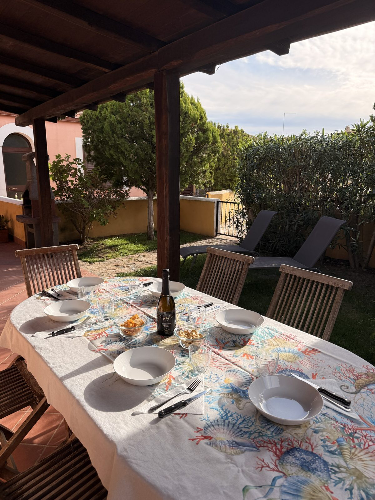
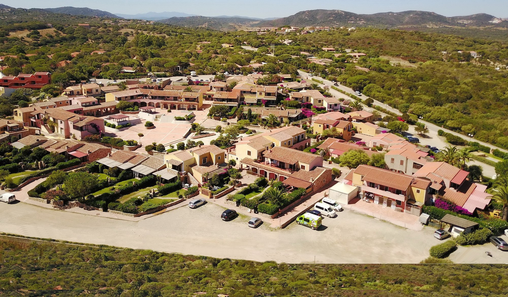
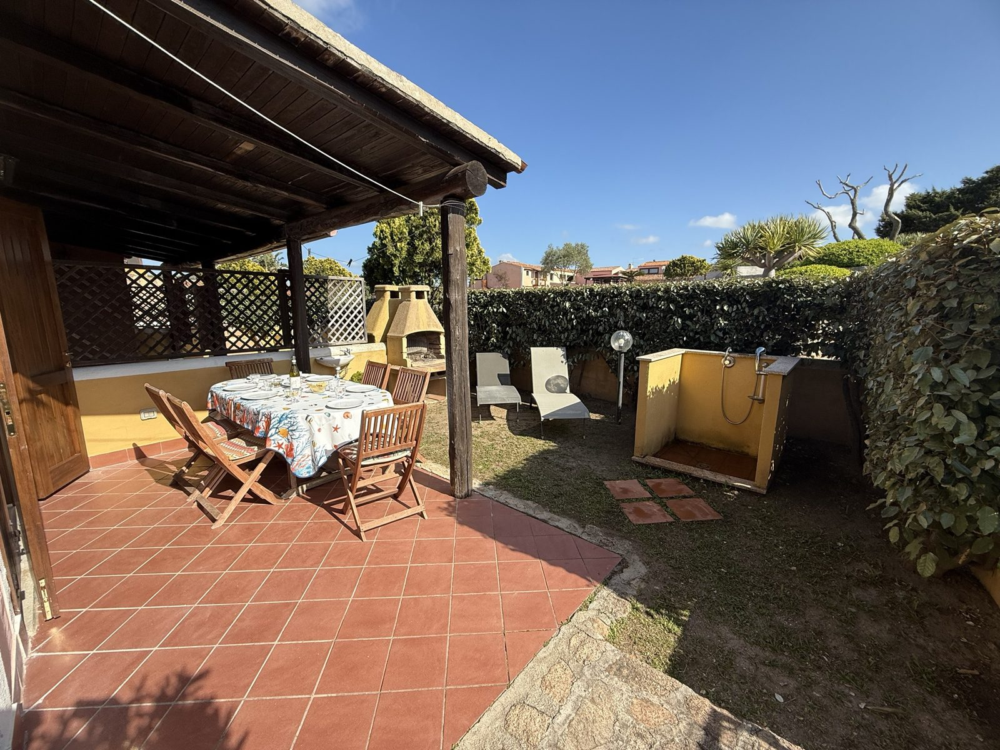
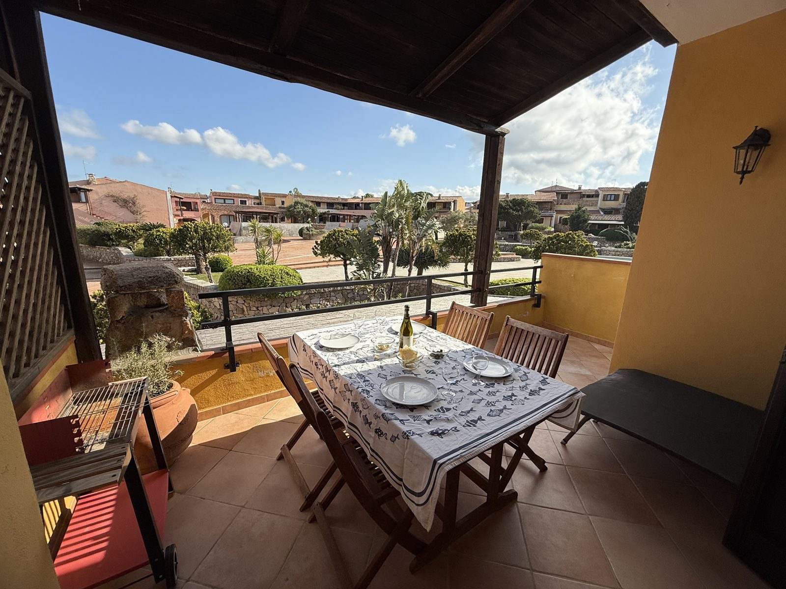
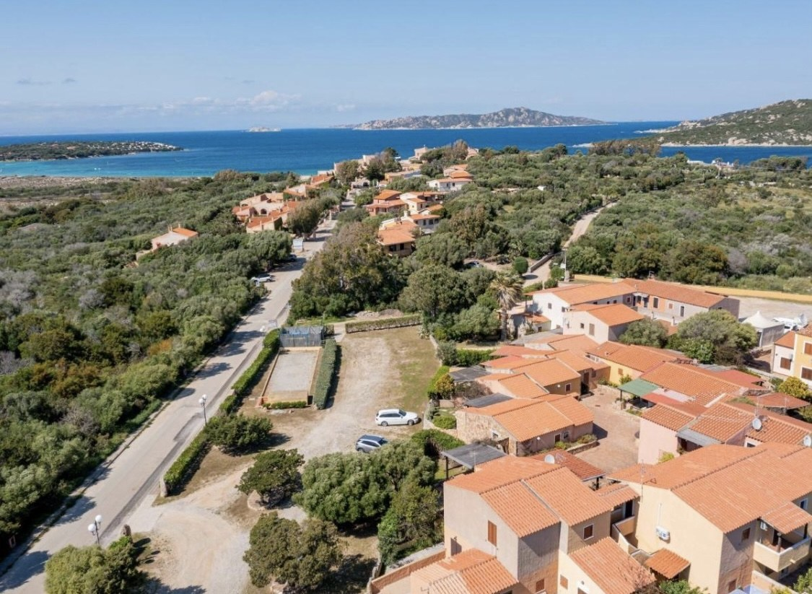
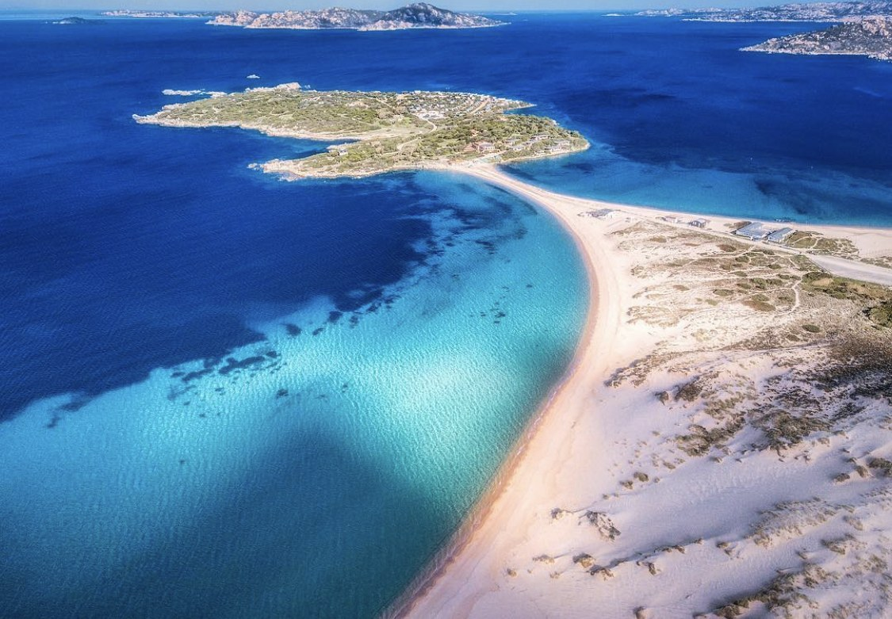

80 m² · 2 camere · 2 bagni
Casa Lory
- Divano letto in salone/cucina
- 2 giardini con salottino
- Doccia e barbecue esterni

Benvenuti alle Case vacanza “Al Borgo”: tre case immerse nella macchia mediterranea del Borgo di Porto Pollo, a soli 300 metri dal mare. Qui il vento porta con sé il profumo del mirto e del rosmarino, il mare cambia colore a ogni ora, dal turchese del mattino all'oro del tramonto, e il tempo segue il ritmo di una vacanza senza fretta. A pochi passi, la Baia dei Delfini vi attende con la sua sabbia chiara e le sue acque turchesi, perfette per lunghe giornate al mare.
Tre case, ognuna con il suo carattere e i suoi dettagli curati: Casa Lory e Casa Ale, con giardino e veranda per pranzare all'aria aperta, e Alcova in piazza, con il suo terrazzo coperto affacciato sulla piazza principale. Un equilibrio perfetto tra privacy e convivialità, per famiglie, amici e giovani coppie.
Dopo una giornata tra spiagge, escursioni verso Palau e l'Arcipelago di La Maddalena e borghi da scoprire, si torna a casa per una doccia all'aperto e una cena alla griglia. Il verde della macchia si fonde con l'azzurro del cielo e il blu del mare all'orizzonte, regalando panorami che rimangono nel cuore.
Al Borgo è più di una vacanza: è un modo di vivere la Sardegna nella sua essenza più autentica.



Porto Pollo è una delle località più amate della Gallura per il suo mare e per il vento, che la rende un punto di riferimento per windsurf e kitesurf. Da qui puoi raggiungere in pochi minuti Palau e l'Arcipelago di La Maddalena, oltre alle spiagge e alle calette della Gallura e della Costa Smeralda.
Le nostre case si trovano al Borgo, un centro turistico residenziale di case in pietra sarda, immerso nella macchia mediterranea e a 300 metri dal mare.
Porto Pollo
A due passi dalle nostre case si apre la Baia dei Delfini: una lunga spiaggia di sabbia chiara con un mare dalle sfumature turchesi, dune naturali attraversate da passerelle in legno e il profilo dell'Arcipelago di La Maddalena all'orizzonte. Il vento costante la rende un luogo molto amato da chi pratica windsurf e kitesurf, ma è anche un posto perfetto per rilassarsi, fare il bagno e godersi il tramonto.
Galleria